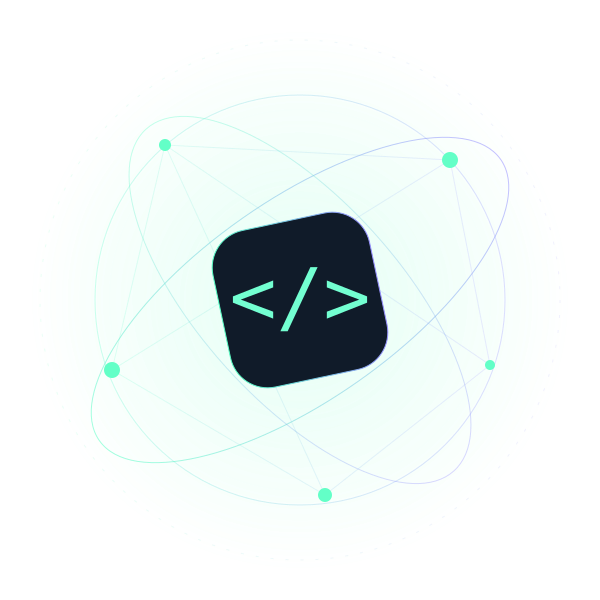

Onde o código acontece
Quantidade de repositórios por categoria
OPEN SOURCE INTELLIGENCE
100 repositórios. Infinitas possibilidades.
Explore os projetos mais estrelados do GitHub e encontre o que faz sentido para você.

{ open source }100 / CONNECTED/ 01 · DESCOBERTA
/ 02 · VISÃO DO ECOSSISTEMA
Distribuição dos 100 projetos deste snapshot.
Quantidade de repositórios por categoria
Um caminho para explorar cada projeto com clareza.
/ 03 · TRANSPARÊNCIA
O ranking usa estrelas públicas do GitHub, em ordem decrescente. Inclui aplicações, bibliotecas, cursos e listas. Estrelas indicam interesse; não medem qualidade, segurança ou adequação ao seu projeto.
As categorias são editoriais e a categoria principal pode agrupar projetos com várias aplicações. Guias remetem ao README oficial consultado. Listas e cursos não precisam de instalação. Os comandos exibidos são trechos do README e devem ser lidos no contexto da documentação.